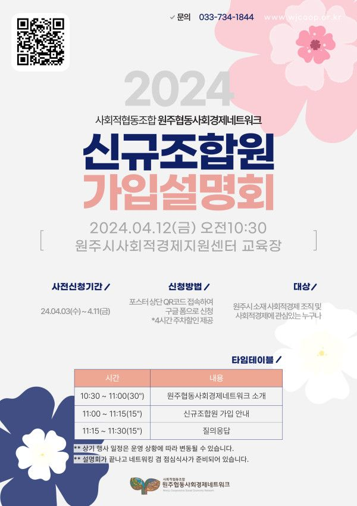

안녕하세요. 원주협동사회경제네트워크입니다.
비가 내리고 어느새 개나리와 벚꽃이 피는 봄이 왔습니다.
사회적협동조합 원주협동사회경제네트워크는
2003년 설립하여 지역 내 협동조합, 사회적기업, 마을기업을 비롯한 사회적경제 조직 및 지역 단체 등
35개 단체 및 11명의 개인(전문가 조합원), 1개의 사업이용조직이 함께하고 있는 비영리법인 사회적협동조합입니다.
원주협동사회경제네트워크에서 2024년을 맞이하여 신규조합원 가입설명회를 아래와 같이 개최합니다.
설명회는 네트워크 소개, 조합원과 사업이용조직의 혜택과 권리 소개, 조합원 가입 절차 안내, 질의응답시간으로 구성되어 있으며
그동안 조합원 가입과 관련해 궁금하신 사항을 해소할 수 있는 자리가 될 것입니다.
네트워크에 관심있는 원주 소재 사회적경제 조직, 중간지원기관, 사회적경제에 관심있는 분들의 많은 참석 부탁드립니다.
설명회는 구글폼을 통해 사전 신청을 받고 있습니다!
사전 신청시 보건소 주차장 4시간 주차할인도 적용가능합니다.
설명회가 끝나고 참석자분들과의 가벼운 네트워킹을 위한 오찬도 준비되어 있습니다^_^
기타 문의사항은 네트워크 사무국(033-734-1844)으로 문의주시기 바랍니다. 감사합니다.
- 아 래 -
<<원주협동사회경제네트워크 신규조합원 가입설명회>>
*일시 : 2024년 4월 12일(금) 오전 10시 30분
*장소 : 원주시사회적경제지원센터 교육장(원주시 원일로 137, 지하상가)
*사전신청기간 : 4월 3일(수) ~ 4월 11일(목)
(자차 이용시 보건소 주차장 이용)